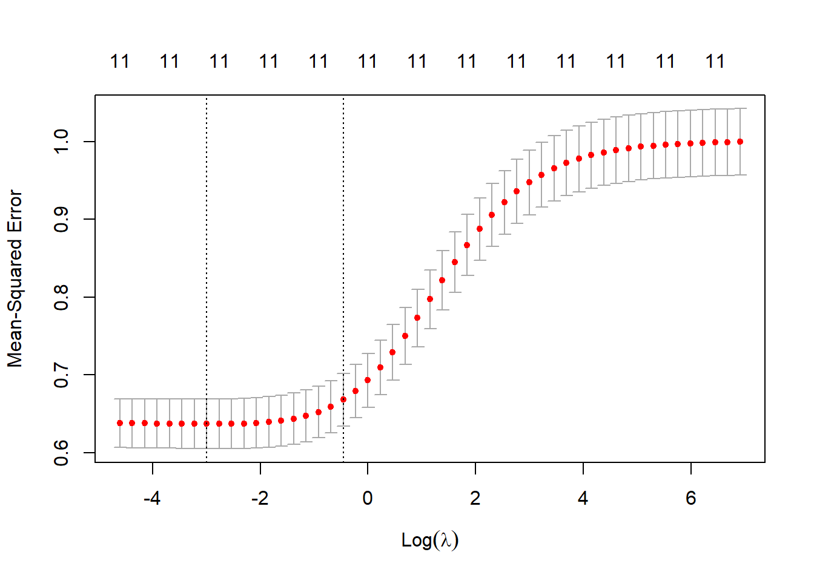
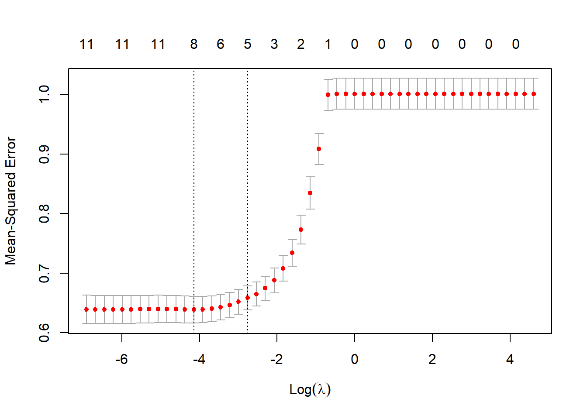

Chapter 6 Lasso Regression
6.1 Load Data
We have taken a data-set from Kaggle: https://www.kaggle.com/uciml/red-wine-quality-cortez-et-al-2009 This data-set inlcudes the measurements from the wine along with its quality rating.
wine<-read.table("data/winequality-red.csv",stringsAsFactors = FALSE,
sep=",",header = TRUE)
glimpse(wine)## Rows: 1,599
## Columns: 12
## $ fixed.acidity [3m[38;5;246m<dbl>[39m[23m 7.4, 7.8, 7.8, 11.2, 7.4, 7.4, 7.9, 7.3, 7.8, 7.5, 6~
## $ volatile.acidity [3m[38;5;246m<dbl>[39m[23m 0.700, 0.880, 0.760, 0.280, 0.700, 0.660, 0.600, 0.6~
## $ citric.acid [3m[38;5;246m<dbl>[39m[23m 0.00, 0.00, 0.04, 0.56, 0.00, 0.00, 0.06, 0.00, 0.02~
## $ residual.sugar [3m[38;5;246m<dbl>[39m[23m 1.9, 2.6, 2.3, 1.9, 1.9, 1.8, 1.6, 1.2, 2.0, 6.1, 1.~
## $ chlorides [3m[38;5;246m<dbl>[39m[23m 0.076, 0.098, 0.092, 0.075, 0.076, 0.075, 0.069, 0.0~
## $ free.sulfur.dioxide [3m[38;5;246m<dbl>[39m[23m 11, 25, 15, 17, 11, 13, 15, 15, 9, 17, 15, 17, 16, 9~
## $ total.sulfur.dioxide [3m[38;5;246m<dbl>[39m[23m 34, 67, 54, 60, 34, 40, 59, 21, 18, 102, 65, 102, 59~
## $ density [3m[38;5;246m<dbl>[39m[23m 0.9978, 0.9968, 0.9970, 0.9980, 0.9978, 0.9978, 0.99~
## $ pH [3m[38;5;246m<dbl>[39m[23m 3.51, 3.20, 3.26, 3.16, 3.51, 3.51, 3.30, 3.39, 3.36~
## $ sulphates [3m[38;5;246m<dbl>[39m[23m 0.56, 0.68, 0.65, 0.58, 0.56, 0.56, 0.46, 0.47, 0.57~
## $ alcohol [3m[38;5;246m<dbl>[39m[23m 9.4, 9.8, 9.8, 9.8, 9.4, 9.4, 9.4, 10.0, 9.5, 10.5, ~
## $ quality [3m[38;5;246m<int>[39m[23m 5, 5, 5, 6, 5, 5, 5, 7, 7, 5, 5, 5, 5, 5, 5, 5, 7, 5~6.2 Process Reference
The process was followed from this site: https://www.pluralsight.com/guides/linear-lasso-and-ridge-regression-with-r
6.3 Data Partitioning
The below code takes 70% of the data for training and 30% of the code for testing.
set.seed(100)
index = sample(1:nrow(wine), 0.7*nrow(wine))
train = wine[index,] # Create the training data
test = wine[-index,] # Create the test data
dim(train)## [1] 1119 12dim(test)## [1] 480 126.4 Scaling the Numeric Features
cols <- colnames(wine)
pre_proc_val <- preProcess(train[,cols], method = c("center", "scale"))
train[,cols] = predict(pre_proc_val, train[,cols])
test[,cols] = predict(pre_proc_val, test[,cols])
summary(train)## fixed.acidity volatile.acidity citric.acid residual.sugar
## Min. :-2.0802 Min. :-2.26583 Min. :-1.37809 Min. :-1.18596
## 1st Qu.:-0.6928 1st Qu.:-0.76458 1st Qu.:-0.92192 1st Qu.:-0.45565
## Median :-0.2304 Median :-0.04176 Median :-0.06029 Median :-0.23655
## Mean : 0.0000 Mean : 0.00000 Mean : 0.00000 Mean : 0.00000
## 3rd Qu.: 0.5790 3rd Qu.: 0.62546 3rd Qu.: 0.80135 3rd Qu.: 0.05557
## Max. : 4.1630 Max. : 5.85201 Max. : 3.69037 Max. : 9.47663
## chlorides free.sulfur.dioxide total.sulfur.dioxide density
## Min. :-1.58727 Min. :-1.4109 Min. :-1.2446 Min. :-3.57012
## 1st Qu.:-0.36546 1st Qu.:-0.8446 1st Qu.:-0.7471 1st Qu.:-0.61381
## Median :-0.15480 Median :-0.1840 Median :-0.2496 Median :-0.01507
## Mean : 0.00000 Mean : 0.0000 Mean : 0.0000 Mean : 0.00000
## 3rd Qu.: 0.05586 3rd Qu.: 0.5710 3rd Qu.: 0.4656 3rd Qu.: 0.57566
## Max. :11.03109 Max. : 5.2899 Max. : 7.5552 Max. : 3.71106
## pH sulphates alcohol quality
## Min. :-3.68218 Min. :-1.8820 Min. :-1.9054 Min. :-3.3046
## 1st Qu.:-0.66652 1st Qu.:-0.6199 1st Qu.:-0.8694 1st Qu.:-0.7831
## Median :-0.02489 Median :-0.2183 Median :-0.2101 Median : 0.4777
## Mean : 0.00000 Mean : 0.0000 Mean : 0.0000 Mean : 0.0000
## 3rd Qu.: 0.55258 3rd Qu.: 0.4127 3rd Qu.: 0.5747 3rd Qu.: 0.4777
## Max. : 4.46653 Max. : 7.6982 Max. : 3.3687 Max. : 2.99936.5 Linear Regression
6.5.1 What is it?
The simplest form of regression is linear regression, which assumes that the predictors have a linear relationship with the target variable. ### Assumptions * Input is assumed to have a Normal distribution and are not correlated with each other.
We saw in the Descriptive Stats section TO:DO that this was not the case
With these assumptions being true we can model quality with the following equation.
\[ q = a_1x_1 + a_2x_2 + a_3x_3 + \dots + a_2nx_n + b + \epsilon\] Where \(a_1, a_2, \dots, a_n\) are coefficients from the model. \(x_1, x_2, \dots, x_n\) are the input variables to the model. \(b\) is a factor of the model representing the y-intercept and \(q\) is equal to the quality output. Finally, \(\epsilon\) is the error. The method that we use to optimize this model is Ordinary Least Squares (OLS).
6.5.2 Single Variable
In the code-block below we output the summary of just the measurement alcohol into the linear model.
lr.1 <- lm(quality~alcohol, data = train)
summary(lr.1)##
## Call:
## lm(formula = quality ~ alcohol, data = train)
##
## Residuals:
## Min 1Q Median 3Q Max
## -3.5773 -0.4885 -0.2049 0.6305 3.2938
##
## Coefficients:
## Estimate Std. Error t value Pr(>|t|)
## (Intercept) 5.845e-16 2.587e-02 0.0 1
## alcohol 5.019e-01 2.588e-02 19.4 <2e-16 ***
## ---
## Signif. codes: 0 '***' 0.001 '**' 0.01 '*' 0.05 '.' 0.1 ' ' 1
##
## Residual standard error: 0.8653 on 1117 degrees of freedom
## Multiple R-squared: 0.252, Adjusted R-squared: 0.2513
## F-statistic: 376.2 on 1 and 1117 DF, p-value: < 2.2e-16Focusing on the p-value above we can tell that it is unlikely that by chance we will observe a relationship between alcohol and quality. Which fits our standard threshold of \(5\%\). We will use the Root Mean Square Error (RMSE) to compare the results of each of the models.
p.1 <- predict(lr.1, newdata = test)
RMSE.1 <- RMSE(p.1,test$quality)
#R_SQUARE_LM <- rsquare(predicted,test$quality)
#LR.Results.df$Single.Var.LM <- data.frame(c(RMSE_LM, R_SQUARE_LM))
#LR.Results.df
RMSE.1## [1] 0.9637194bool <- p.1-test$quality6.5.3 Multiple Variables
In the code block below we will input all of the variables and examine the output.
lr.2 <- lm(quality~., data = train)
summary(lr.2)##
## Call:
## lm(formula = quality ~ ., data = train)
##
## Residuals:
## Min 1Q Median 3Q Max
## -3.2852 -0.4520 -0.0561 0.5319 2.5353
##
## Coefficients:
## Estimate Std. Error t value Pr(>|t|)
## (Intercept) -1.533e-15 2.374e-02 0.000 1.00000
## fixed.acidity 7.697e-02 6.683e-02 1.152 0.24970
## volatile.acidity -2.435e-01 3.159e-02 -7.708 2.82e-14 ***
## citric.acid -5.827e-02 4.157e-02 -1.402 0.16130
## residual.sugar 5.736e-02 3.087e-02 1.858 0.06344 .
## chlorides -1.035e-01 2.955e-02 -3.502 0.00048 ***
## free.sulfur.dioxide 3.101e-02 3.456e-02 0.897 0.36973
## total.sulfur.dioxide -1.151e-01 3.627e-02 -3.175 0.00154 **
## density -7.747e-02 5.969e-02 -1.298 0.19460
## pH -6.783e-02 4.338e-02 -1.564 0.11822
## sulphates 1.863e-01 2.880e-02 6.467 1.49e-10 ***
## alcohol 3.789e-01 4.128e-02 9.179 < 2e-16 ***
## ---
## Signif. codes: 0 '***' 0.001 '**' 0.01 '*' 0.05 '.' 0.1 ' ' 1
##
## Residual standard error: 0.794 on 1107 degrees of freedom
## Multiple R-squared: 0.3758, Adjusted R-squared: 0.3696
## F-statistic: 60.58 on 11 and 1107 DF, p-value: < 2.2e-16Reviewing the output we find from the output that the variables that fall under our standard \(5\%\) null-hypothesis threshold are: ‘volatile.acidity,’ ‘citric.acid,’ ‘chlorides,’ ‘sulphates,’ and ‘alcohol.’
One of the issues with so many variables is there a risk of including variables that do not affect the outcome.
p.2 <- predict(lr.2, newdata = test)
RMSE.2 <- RMSE(p.2,test$quality)
#R_SQUARE_LM <- rsquare(predicted,test$quality)
#LR.Results.df$Single.Var.LM <- data.frame(c(RMSE_LM, R_SQUARE_LM))
#LR.Results.df
RMSE.2## [1] 0.87218446.5.4 Less Variables
In the code block below we will input all of the variables and examine the output.
lr.3 <- lm(quality~ volatile.acidity + citric.acid + chlorides + free.sulfur.dioxide + sulphates + alcohol, data = train)
summary(lr.3)##
## Call:
## lm(formula = quality ~ volatile.acidity + citric.acid + chlorides +
## free.sulfur.dioxide + sulphates + alcohol, data = train)
##
## Residuals:
## Min 1Q Median 3Q Max
## -3.2278 -0.4731 -0.0890 0.5395 2.7188
##
## Coefficients:
## Estimate Std. Error t value Pr(>|t|)
## (Intercept) 5.736e-16 2.396e-02 0.000 1.00000
## volatile.acidity -2.587e-01 2.997e-02 -8.634 < 2e-16 ***
## citric.acid -1.271e-02 2.996e-02 -0.424 0.67149
## chlorides -9.226e-02 2.828e-02 -3.262 0.00114 **
## free.sulfur.dioxide -4.808e-02 2.422e-02 -1.985 0.04735 *
## sulphates 1.762e-01 2.797e-02 6.299 4.31e-10 ***
## alcohol 4.126e-01 2.543e-02 16.227 < 2e-16 ***
## ---
## Signif. codes: 0 '***' 0.001 '**' 0.01 '*' 0.05 '.' 0.1 ' ' 1
##
## Residual standard error: 0.8015 on 1112 degrees of freedom
## Multiple R-squared: 0.361, Adjusted R-squared: 0.3575
## F-statistic: 104.7 on 6 and 1112 DF, p-value: < 2.2e-16p.3 <- predict(lr.3, newdata = test)
RMSE.3 <- RMSE(p.3,test$quality)
#R_SQUARE_LM <- rsquare(predicted,test$quality)
#LR.Results.df$Single.Var.LM <- data.frame(c(RMSE_LM, R_SQUARE_LM))
#LR.Results.df
RMSE.3## [1] 0.88297226.6 Ridge Regression
Ridge regression is an extension of linear regression where the loss function is modified to minimize the complexity of the model. This modification is done by adding a penalty parameter that is equivalent to the square of the magnitude of the coefficients. If we re-write the OLS in Matrix for below: \[X_tX\beta = X_tY\] To solbe for the \(\beta\) terms to obtain the estimation model, we obtain the following.
\[\beta = (X^{'}X)^{-1}X^{'}Y\]
Ridge regression modifies the above by adding a small value of \(\lambda\), to the diagonal elements of the correlation matrix. \[\beta = (R+\lambda I)^{-1}X^{'}Y\]
We need to find an optimal value for the \(lambda\) factor. The ‘glmnet’ feature makes this easy for us. It does not accept a data frame though so we need to make a matrix of the the input variables. The other thing that the chunk below is doing is creating a vecotr of \(\lambda\) values that we want to try. Finally, we plot the
qual <- train$quality
cols <- cols[1:length(cols)-1]
train.mat <- train %>% select(cols) %>% data.matrix()
lambdas <- 10^seq(3, -2, by = -.1)
ridge_reg <- cv.glmnet(train.mat, qual, alpha = 0, lambda = lambdas)
plot(ridge_reg) The lowest point in the curve indicates the optimal lambda: the log value of lambda that best minimized the error in cross-validation. This can be pulled out of the glmnet output.
opt_lambda <- ridge_reg$lambda.min
opt_lambda## [1] 0.05011872ridge_model <- ridge_reg$glmnet.fit
summary(ridge_model)## Length Class Mode
## a0 51 -none- numeric
## beta 561 dgCMatrix S4
## df 51 -none- numeric
## dim 2 -none- numeric
## lambda 51 -none- numeric
## dev.ratio 51 -none- numeric
## nulldev 1 -none- numeric
## npasses 1 -none- numeric
## jerr 1 -none- numeric
## offset 1 -none- logical
## call 5 -none- call
## nobs 1 -none- numericNext, we prepare our test data for prediction.
test.mat <- test %>% select(cols) %>% data.matrix()Next, we find the RMSE of the ridge regression.
p.4 <- predict(ridge_model, s = opt_lambda, newx = test.mat)
RMSE.4 <- RMSE(p.4,test$quality)
RMSE.4## [1] 0.87201716.7 Lasso Regression
lambdas <- 10^seq(2, -3, by = -.1)
# Setting alpha = 1 implements lasso regression
lasso_reg <- cv.glmnet(x, y_train, alpha = 1, lambda = lambdas)
plot(lasso_reg)
# Best
lambda_best <- lasso_reg$lambda.min
lambda_best## [1] 0.01584893p.5 <- predict(lasso_reg, s = lambda_best, newx = test.mat)
RMSE.4 <- RMSE(p.5,test$quality)
RMSE.4## [1] 0.8740436.7.1 Features of the ‘glmnet’ Package
\(\lambda\) is defined once and \(\alpha\) where lasso is scaled by \(\alpha\) and ridge penalty is scaled by \((1-\alpha\)).
6.7.2 Elastic Net Regression
Elastic net regression combines the properties of ridge and lasso regression. So, we need a technique to cycle through find the most optimal limiting factors.
# Set training control
train_cont <- trainControl(method = "repeatedcv",
number = 10,
repeats = 5,
search = "random",
verboseIter = TRUE)
# Train the model
elastic_reg <- train(quality ~ .,
data = train,
method = "glmnet",
preProcess = c("center", "scale"),
tuneLength = 10,
trControl = train_cont)## + Fold01.Rep1: alpha=0.4004, lambda=0.002439
## - Fold01.Rep1: alpha=0.4004, lambda=0.002439
## + Fold01.Rep1: alpha=0.1857, lambda=1.109010
## - Fold01.Rep1: alpha=0.1857, lambda=1.109010
## + Fold01.Rep1: alpha=0.9054, lambda=0.120703
## - Fold01.Rep1: alpha=0.9054, lambda=0.120703
## + Fold01.Rep1: alpha=0.5759, lambda=1.247636
## - Fold01.Rep1: alpha=0.5759, lambda=1.247636
## + Fold01.Rep1: alpha=0.2560, lambda=0.003753
## - Fold01.Rep1: alpha=0.2560, lambda=0.003753
## + Fold01.Rep1: alpha=0.7879, lambda=0.195914
## - Fold01.Rep1: alpha=0.7879, lambda=0.195914
## + Fold01.Rep1: alpha=0.4018, lambda=0.086926
## - Fold01.Rep1: alpha=0.4018, lambda=0.086926
## + Fold01.Rep1: alpha=0.1517, lambda=1.159105
## - Fold01.Rep1: alpha=0.1517, lambda=1.159105
## + Fold01.Rep1: alpha=0.3660, lambda=0.692297
## - Fold01.Rep1: alpha=0.3660, lambda=0.692297
## + Fold01.Rep1: alpha=0.2080, lambda=0.003654
## - Fold01.Rep1: alpha=0.2080, lambda=0.003654
## + Fold02.Rep1: alpha=0.4004, lambda=0.002439
## - Fold02.Rep1: alpha=0.4004, lambda=0.002439
## + Fold02.Rep1: alpha=0.1857, lambda=1.109010
## - Fold02.Rep1: alpha=0.1857, lambda=1.109010
## + Fold02.Rep1: alpha=0.9054, lambda=0.120703
## - Fold02.Rep1: alpha=0.9054, lambda=0.120703
## + Fold02.Rep1: alpha=0.5759, lambda=1.247636
## - Fold02.Rep1: alpha=0.5759, lambda=1.247636
## + Fold02.Rep1: alpha=0.2560, lambda=0.003753
## - Fold02.Rep1: alpha=0.2560, lambda=0.003753
## + Fold02.Rep1: alpha=0.7879, lambda=0.195914
## - Fold02.Rep1: alpha=0.7879, lambda=0.195914
## + Fold02.Rep1: alpha=0.4018, lambda=0.086926
## - Fold02.Rep1: alpha=0.4018, lambda=0.086926
## + Fold02.Rep1: alpha=0.1517, lambda=1.159105
## - Fold02.Rep1: alpha=0.1517, lambda=1.159105
## + Fold02.Rep1: alpha=0.3660, lambda=0.692297
## - Fold02.Rep1: alpha=0.3660, lambda=0.692297
## + Fold02.Rep1: alpha=0.2080, lambda=0.003654
## - Fold02.Rep1: alpha=0.2080, lambda=0.003654
## + Fold03.Rep1: alpha=0.4004, lambda=0.002439
## - Fold03.Rep1: alpha=0.4004, lambda=0.002439
## + Fold03.Rep1: alpha=0.1857, lambda=1.109010
## - Fold03.Rep1: alpha=0.1857, lambda=1.109010
## + Fold03.Rep1: alpha=0.9054, lambda=0.120703
## - Fold03.Rep1: alpha=0.9054, lambda=0.120703
## + Fold03.Rep1: alpha=0.5759, lambda=1.247636
## - Fold03.Rep1: alpha=0.5759, lambda=1.247636
## + Fold03.Rep1: alpha=0.2560, lambda=0.003753
## - Fold03.Rep1: alpha=0.2560, lambda=0.003753
## + Fold03.Rep1: alpha=0.7879, lambda=0.195914
## - Fold03.Rep1: alpha=0.7879, lambda=0.195914
## + Fold03.Rep1: alpha=0.4018, lambda=0.086926
## - Fold03.Rep1: alpha=0.4018, lambda=0.086926
## + Fold03.Rep1: alpha=0.1517, lambda=1.159105
## - Fold03.Rep1: alpha=0.1517, lambda=1.159105
## + Fold03.Rep1: alpha=0.3660, lambda=0.692297
## - Fold03.Rep1: alpha=0.3660, lambda=0.692297
## + Fold03.Rep1: alpha=0.2080, lambda=0.003654
## - Fold03.Rep1: alpha=0.2080, lambda=0.003654
## + Fold04.Rep1: alpha=0.4004, lambda=0.002439
## - Fold04.Rep1: alpha=0.4004, lambda=0.002439
## + Fold04.Rep1: alpha=0.1857, lambda=1.109010
## - Fold04.Rep1: alpha=0.1857, lambda=1.109010
## + Fold04.Rep1: alpha=0.9054, lambda=0.120703
## - Fold04.Rep1: alpha=0.9054, lambda=0.120703
## + Fold04.Rep1: alpha=0.5759, lambda=1.247636
## - Fold04.Rep1: alpha=0.5759, lambda=1.247636
## + Fold04.Rep1: alpha=0.2560, lambda=0.003753
## - Fold04.Rep1: alpha=0.2560, lambda=0.003753
## + Fold04.Rep1: alpha=0.7879, lambda=0.195914
## - Fold04.Rep1: alpha=0.7879, lambda=0.195914
## + Fold04.Rep1: alpha=0.4018, lambda=0.086926
## - Fold04.Rep1: alpha=0.4018, lambda=0.086926
## + Fold04.Rep1: alpha=0.1517, lambda=1.159105
## - Fold04.Rep1: alpha=0.1517, lambda=1.159105
## + Fold04.Rep1: alpha=0.3660, lambda=0.692297
## - Fold04.Rep1: alpha=0.3660, lambda=0.692297
## + Fold04.Rep1: alpha=0.2080, lambda=0.003654
## - Fold04.Rep1: alpha=0.2080, lambda=0.003654
## + Fold05.Rep1: alpha=0.4004, lambda=0.002439
## - Fold05.Rep1: alpha=0.4004, lambda=0.002439
## + Fold05.Rep1: alpha=0.1857, lambda=1.109010
## - Fold05.Rep1: alpha=0.1857, lambda=1.109010
## + Fold05.Rep1: alpha=0.9054, lambda=0.120703
## - Fold05.Rep1: alpha=0.9054, lambda=0.120703
## + Fold05.Rep1: alpha=0.5759, lambda=1.247636
## - Fold05.Rep1: alpha=0.5759, lambda=1.247636
## + Fold05.Rep1: alpha=0.2560, lambda=0.003753
## - Fold05.Rep1: alpha=0.2560, lambda=0.003753
## + Fold05.Rep1: alpha=0.7879, lambda=0.195914
## - Fold05.Rep1: alpha=0.7879, lambda=0.195914
## + Fold05.Rep1: alpha=0.4018, lambda=0.086926
## - Fold05.Rep1: alpha=0.4018, lambda=0.086926
## + Fold05.Rep1: alpha=0.1517, lambda=1.159105
## - Fold05.Rep1: alpha=0.1517, lambda=1.159105
## + Fold05.Rep1: alpha=0.3660, lambda=0.692297
## - Fold05.Rep1: alpha=0.3660, lambda=0.692297
## + Fold05.Rep1: alpha=0.2080, lambda=0.003654
## - Fold05.Rep1: alpha=0.2080, lambda=0.003654
## + Fold06.Rep1: alpha=0.4004, lambda=0.002439
## - Fold06.Rep1: alpha=0.4004, lambda=0.002439
## + Fold06.Rep1: alpha=0.1857, lambda=1.109010
## - Fold06.Rep1: alpha=0.1857, lambda=1.109010
## + Fold06.Rep1: alpha=0.9054, lambda=0.120703
## - Fold06.Rep1: alpha=0.9054, lambda=0.120703
## + Fold06.Rep1: alpha=0.5759, lambda=1.247636
## - Fold06.Rep1: alpha=0.5759, lambda=1.247636
## + Fold06.Rep1: alpha=0.2560, lambda=0.003753
## - Fold06.Rep1: alpha=0.2560, lambda=0.003753
## + Fold06.Rep1: alpha=0.7879, lambda=0.195914
## - Fold06.Rep1: alpha=0.7879, lambda=0.195914
## + Fold06.Rep1: alpha=0.4018, lambda=0.086926
## - Fold06.Rep1: alpha=0.4018, lambda=0.086926
## + Fold06.Rep1: alpha=0.1517, lambda=1.159105
## - Fold06.Rep1: alpha=0.1517, lambda=1.159105
## + Fold06.Rep1: alpha=0.3660, lambda=0.692297
## - Fold06.Rep1: alpha=0.3660, lambda=0.692297
## + Fold06.Rep1: alpha=0.2080, lambda=0.003654
## - Fold06.Rep1: alpha=0.2080, lambda=0.003654
## + Fold07.Rep1: alpha=0.4004, lambda=0.002439
## - Fold07.Rep1: alpha=0.4004, lambda=0.002439
## + Fold07.Rep1: alpha=0.1857, lambda=1.109010
## - Fold07.Rep1: alpha=0.1857, lambda=1.109010
## + Fold07.Rep1: alpha=0.9054, lambda=0.120703
## - Fold07.Rep1: alpha=0.9054, lambda=0.120703
## + Fold07.Rep1: alpha=0.5759, lambda=1.247636
## - Fold07.Rep1: alpha=0.5759, lambda=1.247636
## + Fold07.Rep1: alpha=0.2560, lambda=0.003753
## - Fold07.Rep1: alpha=0.2560, lambda=0.003753
## + Fold07.Rep1: alpha=0.7879, lambda=0.195914
## - Fold07.Rep1: alpha=0.7879, lambda=0.195914
## + Fold07.Rep1: alpha=0.4018, lambda=0.086926
## - Fold07.Rep1: alpha=0.4018, lambda=0.086926
## + Fold07.Rep1: alpha=0.1517, lambda=1.159105
## - Fold07.Rep1: alpha=0.1517, lambda=1.159105
## + Fold07.Rep1: alpha=0.3660, lambda=0.692297
## - Fold07.Rep1: alpha=0.3660, lambda=0.692297
## + Fold07.Rep1: alpha=0.2080, lambda=0.003654
## - Fold07.Rep1: alpha=0.2080, lambda=0.003654
## + Fold08.Rep1: alpha=0.4004, lambda=0.002439
## - Fold08.Rep1: alpha=0.4004, lambda=0.002439
## + Fold08.Rep1: alpha=0.1857, lambda=1.109010
## - Fold08.Rep1: alpha=0.1857, lambda=1.109010
## + Fold08.Rep1: alpha=0.9054, lambda=0.120703
## - Fold08.Rep1: alpha=0.9054, lambda=0.120703
## + Fold08.Rep1: alpha=0.5759, lambda=1.247636
## - Fold08.Rep1: alpha=0.5759, lambda=1.247636
## + Fold08.Rep1: alpha=0.2560, lambda=0.003753
## - Fold08.Rep1: alpha=0.2560, lambda=0.003753
## + Fold08.Rep1: alpha=0.7879, lambda=0.195914
## - Fold08.Rep1: alpha=0.7879, lambda=0.195914
## + Fold08.Rep1: alpha=0.4018, lambda=0.086926
## - Fold08.Rep1: alpha=0.4018, lambda=0.086926
## + Fold08.Rep1: alpha=0.1517, lambda=1.159105
## - Fold08.Rep1: alpha=0.1517, lambda=1.159105
## + Fold08.Rep1: alpha=0.3660, lambda=0.692297
## - Fold08.Rep1: alpha=0.3660, lambda=0.692297
## + Fold08.Rep1: alpha=0.2080, lambda=0.003654
## - Fold08.Rep1: alpha=0.2080, lambda=0.003654
## + Fold09.Rep1: alpha=0.4004, lambda=0.002439
## - Fold09.Rep1: alpha=0.4004, lambda=0.002439
## + Fold09.Rep1: alpha=0.1857, lambda=1.109010
## - Fold09.Rep1: alpha=0.1857, lambda=1.109010
## + Fold09.Rep1: alpha=0.9054, lambda=0.120703
## - Fold09.Rep1: alpha=0.9054, lambda=0.120703
## + Fold09.Rep1: alpha=0.5759, lambda=1.247636
## - Fold09.Rep1: alpha=0.5759, lambda=1.247636
## + Fold09.Rep1: alpha=0.2560, lambda=0.003753
## - Fold09.Rep1: alpha=0.2560, lambda=0.003753
## + Fold09.Rep1: alpha=0.7879, lambda=0.195914
## - Fold09.Rep1: alpha=0.7879, lambda=0.195914
## + Fold09.Rep1: alpha=0.4018, lambda=0.086926
## - Fold09.Rep1: alpha=0.4018, lambda=0.086926
## + Fold09.Rep1: alpha=0.1517, lambda=1.159105
## - Fold09.Rep1: alpha=0.1517, lambda=1.159105
## + Fold09.Rep1: alpha=0.3660, lambda=0.692297
## - Fold09.Rep1: alpha=0.3660, lambda=0.692297
## + Fold09.Rep1: alpha=0.2080, lambda=0.003654
## - Fold09.Rep1: alpha=0.2080, lambda=0.003654
## + Fold10.Rep1: alpha=0.4004, lambda=0.002439
## - Fold10.Rep1: alpha=0.4004, lambda=0.002439
## + Fold10.Rep1: alpha=0.1857, lambda=1.109010
## - Fold10.Rep1: alpha=0.1857, lambda=1.109010
## + Fold10.Rep1: alpha=0.9054, lambda=0.120703
## - Fold10.Rep1: alpha=0.9054, lambda=0.120703
## + Fold10.Rep1: alpha=0.5759, lambda=1.247636
## - Fold10.Rep1: alpha=0.5759, lambda=1.247636
## + Fold10.Rep1: alpha=0.2560, lambda=0.003753
## - Fold10.Rep1: alpha=0.2560, lambda=0.003753
## + Fold10.Rep1: alpha=0.7879, lambda=0.195914
## - Fold10.Rep1: alpha=0.7879, lambda=0.195914
## + Fold10.Rep1: alpha=0.4018, lambda=0.086926
## - Fold10.Rep1: alpha=0.4018, lambda=0.086926
## + Fold10.Rep1: alpha=0.1517, lambda=1.159105
## - Fold10.Rep1: alpha=0.1517, lambda=1.159105
## + Fold10.Rep1: alpha=0.3660, lambda=0.692297
## - Fold10.Rep1: alpha=0.3660, lambda=0.692297
## + Fold10.Rep1: alpha=0.2080, lambda=0.003654
## - Fold10.Rep1: alpha=0.2080, lambda=0.003654
## + Fold01.Rep2: alpha=0.4004, lambda=0.002439
## - Fold01.Rep2: alpha=0.4004, lambda=0.002439
## + Fold01.Rep2: alpha=0.1857, lambda=1.109010
## - Fold01.Rep2: alpha=0.1857, lambda=1.109010
## + Fold01.Rep2: alpha=0.9054, lambda=0.120703
## - Fold01.Rep2: alpha=0.9054, lambda=0.120703
## + Fold01.Rep2: alpha=0.5759, lambda=1.247636
## - Fold01.Rep2: alpha=0.5759, lambda=1.247636
## + Fold01.Rep2: alpha=0.2560, lambda=0.003753
## - Fold01.Rep2: alpha=0.2560, lambda=0.003753
## + Fold01.Rep2: alpha=0.7879, lambda=0.195914
## - Fold01.Rep2: alpha=0.7879, lambda=0.195914
## + Fold01.Rep2: alpha=0.4018, lambda=0.086926
## - Fold01.Rep2: alpha=0.4018, lambda=0.086926
## + Fold01.Rep2: alpha=0.1517, lambda=1.159105
## - Fold01.Rep2: alpha=0.1517, lambda=1.159105
## + Fold01.Rep2: alpha=0.3660, lambda=0.692297
## - Fold01.Rep2: alpha=0.3660, lambda=0.692297
## + Fold01.Rep2: alpha=0.2080, lambda=0.003654
## - Fold01.Rep2: alpha=0.2080, lambda=0.003654
## + Fold02.Rep2: alpha=0.4004, lambda=0.002439
## - Fold02.Rep2: alpha=0.4004, lambda=0.002439
## + Fold02.Rep2: alpha=0.1857, lambda=1.109010
## - Fold02.Rep2: alpha=0.1857, lambda=1.109010
## + Fold02.Rep2: alpha=0.9054, lambda=0.120703
## - Fold02.Rep2: alpha=0.9054, lambda=0.120703
## + Fold02.Rep2: alpha=0.5759, lambda=1.247636
## - Fold02.Rep2: alpha=0.5759, lambda=1.247636
## + Fold02.Rep2: alpha=0.2560, lambda=0.003753
## - Fold02.Rep2: alpha=0.2560, lambda=0.003753
## + Fold02.Rep2: alpha=0.7879, lambda=0.195914
## - Fold02.Rep2: alpha=0.7879, lambda=0.195914
## + Fold02.Rep2: alpha=0.4018, lambda=0.086926
## - Fold02.Rep2: alpha=0.4018, lambda=0.086926
## + Fold02.Rep2: alpha=0.1517, lambda=1.159105
## - Fold02.Rep2: alpha=0.1517, lambda=1.159105
## + Fold02.Rep2: alpha=0.3660, lambda=0.692297
## - Fold02.Rep2: alpha=0.3660, lambda=0.692297
## + Fold02.Rep2: alpha=0.2080, lambda=0.003654
## - Fold02.Rep2: alpha=0.2080, lambda=0.003654
## + Fold03.Rep2: alpha=0.4004, lambda=0.002439
## - Fold03.Rep2: alpha=0.4004, lambda=0.002439
## + Fold03.Rep2: alpha=0.1857, lambda=1.109010
## - Fold03.Rep2: alpha=0.1857, lambda=1.109010
## + Fold03.Rep2: alpha=0.9054, lambda=0.120703
## - Fold03.Rep2: alpha=0.9054, lambda=0.120703
## + Fold03.Rep2: alpha=0.5759, lambda=1.247636
## - Fold03.Rep2: alpha=0.5759, lambda=1.247636
## + Fold03.Rep2: alpha=0.2560, lambda=0.003753
## - Fold03.Rep2: alpha=0.2560, lambda=0.003753
## + Fold03.Rep2: alpha=0.7879, lambda=0.195914
## - Fold03.Rep2: alpha=0.7879, lambda=0.195914
## + Fold03.Rep2: alpha=0.4018, lambda=0.086926
## - Fold03.Rep2: alpha=0.4018, lambda=0.086926
## + Fold03.Rep2: alpha=0.1517, lambda=1.159105
## - Fold03.Rep2: alpha=0.1517, lambda=1.159105
## + Fold03.Rep2: alpha=0.3660, lambda=0.692297
## - Fold03.Rep2: alpha=0.3660, lambda=0.692297
## + Fold03.Rep2: alpha=0.2080, lambda=0.003654
## - Fold03.Rep2: alpha=0.2080, lambda=0.003654
## + Fold04.Rep2: alpha=0.4004, lambda=0.002439
## - Fold04.Rep2: alpha=0.4004, lambda=0.002439
## + Fold04.Rep2: alpha=0.1857, lambda=1.109010
## - Fold04.Rep2: alpha=0.1857, lambda=1.109010
## + Fold04.Rep2: alpha=0.9054, lambda=0.120703
## - Fold04.Rep2: alpha=0.9054, lambda=0.120703
## + Fold04.Rep2: alpha=0.5759, lambda=1.247636
## - Fold04.Rep2: alpha=0.5759, lambda=1.247636
## + Fold04.Rep2: alpha=0.2560, lambda=0.003753
## - Fold04.Rep2: alpha=0.2560, lambda=0.003753
## + Fold04.Rep2: alpha=0.7879, lambda=0.195914
## - Fold04.Rep2: alpha=0.7879, lambda=0.195914
## + Fold04.Rep2: alpha=0.4018, lambda=0.086926
## - Fold04.Rep2: alpha=0.4018, lambda=0.086926
## + Fold04.Rep2: alpha=0.1517, lambda=1.159105
## - Fold04.Rep2: alpha=0.1517, lambda=1.159105
## + Fold04.Rep2: alpha=0.3660, lambda=0.692297
## - Fold04.Rep2: alpha=0.3660, lambda=0.692297
## + Fold04.Rep2: alpha=0.2080, lambda=0.003654
## - Fold04.Rep2: alpha=0.2080, lambda=0.003654
## + Fold05.Rep2: alpha=0.4004, lambda=0.002439
## - Fold05.Rep2: alpha=0.4004, lambda=0.002439
## + Fold05.Rep2: alpha=0.1857, lambda=1.109010
## - Fold05.Rep2: alpha=0.1857, lambda=1.109010
## + Fold05.Rep2: alpha=0.9054, lambda=0.120703
## - Fold05.Rep2: alpha=0.9054, lambda=0.120703
## + Fold05.Rep2: alpha=0.5759, lambda=1.247636
## - Fold05.Rep2: alpha=0.5759, lambda=1.247636
## + Fold05.Rep2: alpha=0.2560, lambda=0.003753
## - Fold05.Rep2: alpha=0.2560, lambda=0.003753
## + Fold05.Rep2: alpha=0.7879, lambda=0.195914
## - Fold05.Rep2: alpha=0.7879, lambda=0.195914
## + Fold05.Rep2: alpha=0.4018, lambda=0.086926
## - Fold05.Rep2: alpha=0.4018, lambda=0.086926
## + Fold05.Rep2: alpha=0.1517, lambda=1.159105
## - Fold05.Rep2: alpha=0.1517, lambda=1.159105
## + Fold05.Rep2: alpha=0.3660, lambda=0.692297
## - Fold05.Rep2: alpha=0.3660, lambda=0.692297
## + Fold05.Rep2: alpha=0.2080, lambda=0.003654
## - Fold05.Rep2: alpha=0.2080, lambda=0.003654
## + Fold06.Rep2: alpha=0.4004, lambda=0.002439
## - Fold06.Rep2: alpha=0.4004, lambda=0.002439
## + Fold06.Rep2: alpha=0.1857, lambda=1.109010
## - Fold06.Rep2: alpha=0.1857, lambda=1.109010
## + Fold06.Rep2: alpha=0.9054, lambda=0.120703
## - Fold06.Rep2: alpha=0.9054, lambda=0.120703
## + Fold06.Rep2: alpha=0.5759, lambda=1.247636
## - Fold06.Rep2: alpha=0.5759, lambda=1.247636
## + Fold06.Rep2: alpha=0.2560, lambda=0.003753
## - Fold06.Rep2: alpha=0.2560, lambda=0.003753
## + Fold06.Rep2: alpha=0.7879, lambda=0.195914
## - Fold06.Rep2: alpha=0.7879, lambda=0.195914
## + Fold06.Rep2: alpha=0.4018, lambda=0.086926
## - Fold06.Rep2: alpha=0.4018, lambda=0.086926
## + Fold06.Rep2: alpha=0.1517, lambda=1.159105
## - Fold06.Rep2: alpha=0.1517, lambda=1.159105
## + Fold06.Rep2: alpha=0.3660, lambda=0.692297
## - Fold06.Rep2: alpha=0.3660, lambda=0.692297
## + Fold06.Rep2: alpha=0.2080, lambda=0.003654
## - Fold06.Rep2: alpha=0.2080, lambda=0.003654
## + Fold07.Rep2: alpha=0.4004, lambda=0.002439
## - Fold07.Rep2: alpha=0.4004, lambda=0.002439
## + Fold07.Rep2: alpha=0.1857, lambda=1.109010
## - Fold07.Rep2: alpha=0.1857, lambda=1.109010
## + Fold07.Rep2: alpha=0.9054, lambda=0.120703
## - Fold07.Rep2: alpha=0.9054, lambda=0.120703
## + Fold07.Rep2: alpha=0.5759, lambda=1.247636
## - Fold07.Rep2: alpha=0.5759, lambda=1.247636
## + Fold07.Rep2: alpha=0.2560, lambda=0.003753
## - Fold07.Rep2: alpha=0.2560, lambda=0.003753
## + Fold07.Rep2: alpha=0.7879, lambda=0.195914
## - Fold07.Rep2: alpha=0.7879, lambda=0.195914
## + Fold07.Rep2: alpha=0.4018, lambda=0.086926
## - Fold07.Rep2: alpha=0.4018, lambda=0.086926
## + Fold07.Rep2: alpha=0.1517, lambda=1.159105
## - Fold07.Rep2: alpha=0.1517, lambda=1.159105
## + Fold07.Rep2: alpha=0.3660, lambda=0.692297
## - Fold07.Rep2: alpha=0.3660, lambda=0.692297
## + Fold07.Rep2: alpha=0.2080, lambda=0.003654
## - Fold07.Rep2: alpha=0.2080, lambda=0.003654
## + Fold08.Rep2: alpha=0.4004, lambda=0.002439
## - Fold08.Rep2: alpha=0.4004, lambda=0.002439
## + Fold08.Rep2: alpha=0.1857, lambda=1.109010
## - Fold08.Rep2: alpha=0.1857, lambda=1.109010
## + Fold08.Rep2: alpha=0.9054, lambda=0.120703
## - Fold08.Rep2: alpha=0.9054, lambda=0.120703
## + Fold08.Rep2: alpha=0.5759, lambda=1.247636
## - Fold08.Rep2: alpha=0.5759, lambda=1.247636
## + Fold08.Rep2: alpha=0.2560, lambda=0.003753
## - Fold08.Rep2: alpha=0.2560, lambda=0.003753
## + Fold08.Rep2: alpha=0.7879, lambda=0.195914
## - Fold08.Rep2: alpha=0.7879, lambda=0.195914
## + Fold08.Rep2: alpha=0.4018, lambda=0.086926
## - Fold08.Rep2: alpha=0.4018, lambda=0.086926
## + Fold08.Rep2: alpha=0.1517, lambda=1.159105
## - Fold08.Rep2: alpha=0.1517, lambda=1.159105
## + Fold08.Rep2: alpha=0.3660, lambda=0.692297
## - Fold08.Rep2: alpha=0.3660, lambda=0.692297
## + Fold08.Rep2: alpha=0.2080, lambda=0.003654
## - Fold08.Rep2: alpha=0.2080, lambda=0.003654
## + Fold09.Rep2: alpha=0.4004, lambda=0.002439
## - Fold09.Rep2: alpha=0.4004, lambda=0.002439
## + Fold09.Rep2: alpha=0.1857, lambda=1.109010
## - Fold09.Rep2: alpha=0.1857, lambda=1.109010
## + Fold09.Rep2: alpha=0.9054, lambda=0.120703
## - Fold09.Rep2: alpha=0.9054, lambda=0.120703
## + Fold09.Rep2: alpha=0.5759, lambda=1.247636
## - Fold09.Rep2: alpha=0.5759, lambda=1.247636
## + Fold09.Rep2: alpha=0.2560, lambda=0.003753
## - Fold09.Rep2: alpha=0.2560, lambda=0.003753
## + Fold09.Rep2: alpha=0.7879, lambda=0.195914
## - Fold09.Rep2: alpha=0.7879, lambda=0.195914
## + Fold09.Rep2: alpha=0.4018, lambda=0.086926
## - Fold09.Rep2: alpha=0.4018, lambda=0.086926
## + Fold09.Rep2: alpha=0.1517, lambda=1.159105
## - Fold09.Rep2: alpha=0.1517, lambda=1.159105
## + Fold09.Rep2: alpha=0.3660, lambda=0.692297
## - Fold09.Rep2: alpha=0.3660, lambda=0.692297
## + Fold09.Rep2: alpha=0.2080, lambda=0.003654
## - Fold09.Rep2: alpha=0.2080, lambda=0.003654
## + Fold10.Rep2: alpha=0.4004, lambda=0.002439
## - Fold10.Rep2: alpha=0.4004, lambda=0.002439
## + Fold10.Rep2: alpha=0.1857, lambda=1.109010
## - Fold10.Rep2: alpha=0.1857, lambda=1.109010
## + Fold10.Rep2: alpha=0.9054, lambda=0.120703
## - Fold10.Rep2: alpha=0.9054, lambda=0.120703
## + Fold10.Rep2: alpha=0.5759, lambda=1.247636
## - Fold10.Rep2: alpha=0.5759, lambda=1.247636
## + Fold10.Rep2: alpha=0.2560, lambda=0.003753
## - Fold10.Rep2: alpha=0.2560, lambda=0.003753
## + Fold10.Rep2: alpha=0.7879, lambda=0.195914
## - Fold10.Rep2: alpha=0.7879, lambda=0.195914
## + Fold10.Rep2: alpha=0.4018, lambda=0.086926
## - Fold10.Rep2: alpha=0.4018, lambda=0.086926
## + Fold10.Rep2: alpha=0.1517, lambda=1.159105
## - Fold10.Rep2: alpha=0.1517, lambda=1.159105
## + Fold10.Rep2: alpha=0.3660, lambda=0.692297
## - Fold10.Rep2: alpha=0.3660, lambda=0.692297
## + Fold10.Rep2: alpha=0.2080, lambda=0.003654
## - Fold10.Rep2: alpha=0.2080, lambda=0.003654
## + Fold01.Rep3: alpha=0.4004, lambda=0.002439
## - Fold01.Rep3: alpha=0.4004, lambda=0.002439
## + Fold01.Rep3: alpha=0.1857, lambda=1.109010
## - Fold01.Rep3: alpha=0.1857, lambda=1.109010
## + Fold01.Rep3: alpha=0.9054, lambda=0.120703
## - Fold01.Rep3: alpha=0.9054, lambda=0.120703
## + Fold01.Rep3: alpha=0.5759, lambda=1.247636
## - Fold01.Rep3: alpha=0.5759, lambda=1.247636
## + Fold01.Rep3: alpha=0.2560, lambda=0.003753
## - Fold01.Rep3: alpha=0.2560, lambda=0.003753
## + Fold01.Rep3: alpha=0.7879, lambda=0.195914
## - Fold01.Rep3: alpha=0.7879, lambda=0.195914
## + Fold01.Rep3: alpha=0.4018, lambda=0.086926
## - Fold01.Rep3: alpha=0.4018, lambda=0.086926
## + Fold01.Rep3: alpha=0.1517, lambda=1.159105
## - Fold01.Rep3: alpha=0.1517, lambda=1.159105
## + Fold01.Rep3: alpha=0.3660, lambda=0.692297
## - Fold01.Rep3: alpha=0.3660, lambda=0.692297
## + Fold01.Rep3: alpha=0.2080, lambda=0.003654
## - Fold01.Rep3: alpha=0.2080, lambda=0.003654
## + Fold02.Rep3: alpha=0.4004, lambda=0.002439
## - Fold02.Rep3: alpha=0.4004, lambda=0.002439
## + Fold02.Rep3: alpha=0.1857, lambda=1.109010
## - Fold02.Rep3: alpha=0.1857, lambda=1.109010
## + Fold02.Rep3: alpha=0.9054, lambda=0.120703
## - Fold02.Rep3: alpha=0.9054, lambda=0.120703
## + Fold02.Rep3: alpha=0.5759, lambda=1.247636
## - Fold02.Rep3: alpha=0.5759, lambda=1.247636
## + Fold02.Rep3: alpha=0.2560, lambda=0.003753
## - Fold02.Rep3: alpha=0.2560, lambda=0.003753
## + Fold02.Rep3: alpha=0.7879, lambda=0.195914
## - Fold02.Rep3: alpha=0.7879, lambda=0.195914
## + Fold02.Rep3: alpha=0.4018, lambda=0.086926
## - Fold02.Rep3: alpha=0.4018, lambda=0.086926
## + Fold02.Rep3: alpha=0.1517, lambda=1.159105
## - Fold02.Rep3: alpha=0.1517, lambda=1.159105
## + Fold02.Rep3: alpha=0.3660, lambda=0.692297
## - Fold02.Rep3: alpha=0.3660, lambda=0.692297
## + Fold02.Rep3: alpha=0.2080, lambda=0.003654
## - Fold02.Rep3: alpha=0.2080, lambda=0.003654
## + Fold03.Rep3: alpha=0.4004, lambda=0.002439
## - Fold03.Rep3: alpha=0.4004, lambda=0.002439
## + Fold03.Rep3: alpha=0.1857, lambda=1.109010
## - Fold03.Rep3: alpha=0.1857, lambda=1.109010
## + Fold03.Rep3: alpha=0.9054, lambda=0.120703
## - Fold03.Rep3: alpha=0.9054, lambda=0.120703
## + Fold03.Rep3: alpha=0.5759, lambda=1.247636
## - Fold03.Rep3: alpha=0.5759, lambda=1.247636
## + Fold03.Rep3: alpha=0.2560, lambda=0.003753
## - Fold03.Rep3: alpha=0.2560, lambda=0.003753
## + Fold03.Rep3: alpha=0.7879, lambda=0.195914
## - Fold03.Rep3: alpha=0.7879, lambda=0.195914
## + Fold03.Rep3: alpha=0.4018, lambda=0.086926
## - Fold03.Rep3: alpha=0.4018, lambda=0.086926
## + Fold03.Rep3: alpha=0.1517, lambda=1.159105
## - Fold03.Rep3: alpha=0.1517, lambda=1.159105
## + Fold03.Rep3: alpha=0.3660, lambda=0.692297
## - Fold03.Rep3: alpha=0.3660, lambda=0.692297
## + Fold03.Rep3: alpha=0.2080, lambda=0.003654
## - Fold03.Rep3: alpha=0.2080, lambda=0.003654
## + Fold04.Rep3: alpha=0.4004, lambda=0.002439
## - Fold04.Rep3: alpha=0.4004, lambda=0.002439
## + Fold04.Rep3: alpha=0.1857, lambda=1.109010
## - Fold04.Rep3: alpha=0.1857, lambda=1.109010
## + Fold04.Rep3: alpha=0.9054, lambda=0.120703
## - Fold04.Rep3: alpha=0.9054, lambda=0.120703
## + Fold04.Rep3: alpha=0.5759, lambda=1.247636
## - Fold04.Rep3: alpha=0.5759, lambda=1.247636
## + Fold04.Rep3: alpha=0.2560, lambda=0.003753
## - Fold04.Rep3: alpha=0.2560, lambda=0.003753
## + Fold04.Rep3: alpha=0.7879, lambda=0.195914
## - Fold04.Rep3: alpha=0.7879, lambda=0.195914
## + Fold04.Rep3: alpha=0.4018, lambda=0.086926
## - Fold04.Rep3: alpha=0.4018, lambda=0.086926
## + Fold04.Rep3: alpha=0.1517, lambda=1.159105
## - Fold04.Rep3: alpha=0.1517, lambda=1.159105
## + Fold04.Rep3: alpha=0.3660, lambda=0.692297
## - Fold04.Rep3: alpha=0.3660, lambda=0.692297
## + Fold04.Rep3: alpha=0.2080, lambda=0.003654
## - Fold04.Rep3: alpha=0.2080, lambda=0.003654
## + Fold05.Rep3: alpha=0.4004, lambda=0.002439
## - Fold05.Rep3: alpha=0.4004, lambda=0.002439
## + Fold05.Rep3: alpha=0.1857, lambda=1.109010
## - Fold05.Rep3: alpha=0.1857, lambda=1.109010
## + Fold05.Rep3: alpha=0.9054, lambda=0.120703
## - Fold05.Rep3: alpha=0.9054, lambda=0.120703
## + Fold05.Rep3: alpha=0.5759, lambda=1.247636
## - Fold05.Rep3: alpha=0.5759, lambda=1.247636
## + Fold05.Rep3: alpha=0.2560, lambda=0.003753
## - Fold05.Rep3: alpha=0.2560, lambda=0.003753
## + Fold05.Rep3: alpha=0.7879, lambda=0.195914
## - Fold05.Rep3: alpha=0.7879, lambda=0.195914
## + Fold05.Rep3: alpha=0.4018, lambda=0.086926
## - Fold05.Rep3: alpha=0.4018, lambda=0.086926
## + Fold05.Rep3: alpha=0.1517, lambda=1.159105
## - Fold05.Rep3: alpha=0.1517, lambda=1.159105
## + Fold05.Rep3: alpha=0.3660, lambda=0.692297
## - Fold05.Rep3: alpha=0.3660, lambda=0.692297
## + Fold05.Rep3: alpha=0.2080, lambda=0.003654
## - Fold05.Rep3: alpha=0.2080, lambda=0.003654
## + Fold06.Rep3: alpha=0.4004, lambda=0.002439
## - Fold06.Rep3: alpha=0.4004, lambda=0.002439
## + Fold06.Rep3: alpha=0.1857, lambda=1.109010
## - Fold06.Rep3: alpha=0.1857, lambda=1.109010
## + Fold06.Rep3: alpha=0.9054, lambda=0.120703
## - Fold06.Rep3: alpha=0.9054, lambda=0.120703
## + Fold06.Rep3: alpha=0.5759, lambda=1.247636
## - Fold06.Rep3: alpha=0.5759, lambda=1.247636
## + Fold06.Rep3: alpha=0.2560, lambda=0.003753
## - Fold06.Rep3: alpha=0.2560, lambda=0.003753
## + Fold06.Rep3: alpha=0.7879, lambda=0.195914
## - Fold06.Rep3: alpha=0.7879, lambda=0.195914
## + Fold06.Rep3: alpha=0.4018, lambda=0.086926
## - Fold06.Rep3: alpha=0.4018, lambda=0.086926
## + Fold06.Rep3: alpha=0.1517, lambda=1.159105
## - Fold06.Rep3: alpha=0.1517, lambda=1.159105
## + Fold06.Rep3: alpha=0.3660, lambda=0.692297
## - Fold06.Rep3: alpha=0.3660, lambda=0.692297
## + Fold06.Rep3: alpha=0.2080, lambda=0.003654
## - Fold06.Rep3: alpha=0.2080, lambda=0.003654
## + Fold07.Rep3: alpha=0.4004, lambda=0.002439
## - Fold07.Rep3: alpha=0.4004, lambda=0.002439
## + Fold07.Rep3: alpha=0.1857, lambda=1.109010
## - Fold07.Rep3: alpha=0.1857, lambda=1.109010
## + Fold07.Rep3: alpha=0.9054, lambda=0.120703
## - Fold07.Rep3: alpha=0.9054, lambda=0.120703
## + Fold07.Rep3: alpha=0.5759, lambda=1.247636
## - Fold07.Rep3: alpha=0.5759, lambda=1.247636
## + Fold07.Rep3: alpha=0.2560, lambda=0.003753
## - Fold07.Rep3: alpha=0.2560, lambda=0.003753
## + Fold07.Rep3: alpha=0.7879, lambda=0.195914
## - Fold07.Rep3: alpha=0.7879, lambda=0.195914
## + Fold07.Rep3: alpha=0.4018, lambda=0.086926
## - Fold07.Rep3: alpha=0.4018, lambda=0.086926
## + Fold07.Rep3: alpha=0.1517, lambda=1.159105
## - Fold07.Rep3: alpha=0.1517, lambda=1.159105
## + Fold07.Rep3: alpha=0.3660, lambda=0.692297
## - Fold07.Rep3: alpha=0.3660, lambda=0.692297
## + Fold07.Rep3: alpha=0.2080, lambda=0.003654
## - Fold07.Rep3: alpha=0.2080, lambda=0.003654
## + Fold08.Rep3: alpha=0.4004, lambda=0.002439
## - Fold08.Rep3: alpha=0.4004, lambda=0.002439
## + Fold08.Rep3: alpha=0.1857, lambda=1.109010
## - Fold08.Rep3: alpha=0.1857, lambda=1.109010
## + Fold08.Rep3: alpha=0.9054, lambda=0.120703
## - Fold08.Rep3: alpha=0.9054, lambda=0.120703
## + Fold08.Rep3: alpha=0.5759, lambda=1.247636
## - Fold08.Rep3: alpha=0.5759, lambda=1.247636
## + Fold08.Rep3: alpha=0.2560, lambda=0.003753
## - Fold08.Rep3: alpha=0.2560, lambda=0.003753
## + Fold08.Rep3: alpha=0.7879, lambda=0.195914
## - Fold08.Rep3: alpha=0.7879, lambda=0.195914
## + Fold08.Rep3: alpha=0.4018, lambda=0.086926
## - Fold08.Rep3: alpha=0.4018, lambda=0.086926
## + Fold08.Rep3: alpha=0.1517, lambda=1.159105
## - Fold08.Rep3: alpha=0.1517, lambda=1.159105
## + Fold08.Rep3: alpha=0.3660, lambda=0.692297
## - Fold08.Rep3: alpha=0.3660, lambda=0.692297
## + Fold08.Rep3: alpha=0.2080, lambda=0.003654
## - Fold08.Rep3: alpha=0.2080, lambda=0.003654
## + Fold09.Rep3: alpha=0.4004, lambda=0.002439
## - Fold09.Rep3: alpha=0.4004, lambda=0.002439
## + Fold09.Rep3: alpha=0.1857, lambda=1.109010
## - Fold09.Rep3: alpha=0.1857, lambda=1.109010
## + Fold09.Rep3: alpha=0.9054, lambda=0.120703
## - Fold09.Rep3: alpha=0.9054, lambda=0.120703
## + Fold09.Rep3: alpha=0.5759, lambda=1.247636
## - Fold09.Rep3: alpha=0.5759, lambda=1.247636
## + Fold09.Rep3: alpha=0.2560, lambda=0.003753
## - Fold09.Rep3: alpha=0.2560, lambda=0.003753
## + Fold09.Rep3: alpha=0.7879, lambda=0.195914
## - Fold09.Rep3: alpha=0.7879, lambda=0.195914
## + Fold09.Rep3: alpha=0.4018, lambda=0.086926
## - Fold09.Rep3: alpha=0.4018, lambda=0.086926
## + Fold09.Rep3: alpha=0.1517, lambda=1.159105
## - Fold09.Rep3: alpha=0.1517, lambda=1.159105
## + Fold09.Rep3: alpha=0.3660, lambda=0.692297
## - Fold09.Rep3: alpha=0.3660, lambda=0.692297
## + Fold09.Rep3: alpha=0.2080, lambda=0.003654
## - Fold09.Rep3: alpha=0.2080, lambda=0.003654
## + Fold10.Rep3: alpha=0.4004, lambda=0.002439
## - Fold10.Rep3: alpha=0.4004, lambda=0.002439
## + Fold10.Rep3: alpha=0.1857, lambda=1.109010
## - Fold10.Rep3: alpha=0.1857, lambda=1.109010
## + Fold10.Rep3: alpha=0.9054, lambda=0.120703
## - Fold10.Rep3: alpha=0.9054, lambda=0.120703
## + Fold10.Rep3: alpha=0.5759, lambda=1.247636
## - Fold10.Rep3: alpha=0.5759, lambda=1.247636
## + Fold10.Rep3: alpha=0.2560, lambda=0.003753
## - Fold10.Rep3: alpha=0.2560, lambda=0.003753
## + Fold10.Rep3: alpha=0.7879, lambda=0.195914
## - Fold10.Rep3: alpha=0.7879, lambda=0.195914
## + Fold10.Rep3: alpha=0.4018, lambda=0.086926
## - Fold10.Rep3: alpha=0.4018, lambda=0.086926
## + Fold10.Rep3: alpha=0.1517, lambda=1.159105
## - Fold10.Rep3: alpha=0.1517, lambda=1.159105
## + Fold10.Rep3: alpha=0.3660, lambda=0.692297
## - Fold10.Rep3: alpha=0.3660, lambda=0.692297
## + Fold10.Rep3: alpha=0.2080, lambda=0.003654
## - Fold10.Rep3: alpha=0.2080, lambda=0.003654
## + Fold01.Rep4: alpha=0.4004, lambda=0.002439
## - Fold01.Rep4: alpha=0.4004, lambda=0.002439
## + Fold01.Rep4: alpha=0.1857, lambda=1.109010
## - Fold01.Rep4: alpha=0.1857, lambda=1.109010
## + Fold01.Rep4: alpha=0.9054, lambda=0.120703
## - Fold01.Rep4: alpha=0.9054, lambda=0.120703
## + Fold01.Rep4: alpha=0.5759, lambda=1.247636
## - Fold01.Rep4: alpha=0.5759, lambda=1.247636
## + Fold01.Rep4: alpha=0.2560, lambda=0.003753
## - Fold01.Rep4: alpha=0.2560, lambda=0.003753
## + Fold01.Rep4: alpha=0.7879, lambda=0.195914
## - Fold01.Rep4: alpha=0.7879, lambda=0.195914
## + Fold01.Rep4: alpha=0.4018, lambda=0.086926
## - Fold01.Rep4: alpha=0.4018, lambda=0.086926
## + Fold01.Rep4: alpha=0.1517, lambda=1.159105
## - Fold01.Rep4: alpha=0.1517, lambda=1.159105
## + Fold01.Rep4: alpha=0.3660, lambda=0.692297
## - Fold01.Rep4: alpha=0.3660, lambda=0.692297
## + Fold01.Rep4: alpha=0.2080, lambda=0.003654
## - Fold01.Rep4: alpha=0.2080, lambda=0.003654
## + Fold02.Rep4: alpha=0.4004, lambda=0.002439
## - Fold02.Rep4: alpha=0.4004, lambda=0.002439
## + Fold02.Rep4: alpha=0.1857, lambda=1.109010
## - Fold02.Rep4: alpha=0.1857, lambda=1.109010
## + Fold02.Rep4: alpha=0.9054, lambda=0.120703
## - Fold02.Rep4: alpha=0.9054, lambda=0.120703
## + Fold02.Rep4: alpha=0.5759, lambda=1.247636
## - Fold02.Rep4: alpha=0.5759, lambda=1.247636
## + Fold02.Rep4: alpha=0.2560, lambda=0.003753
## - Fold02.Rep4: alpha=0.2560, lambda=0.003753
## + Fold02.Rep4: alpha=0.7879, lambda=0.195914
## - Fold02.Rep4: alpha=0.7879, lambda=0.195914
## + Fold02.Rep4: alpha=0.4018, lambda=0.086926
## - Fold02.Rep4: alpha=0.4018, lambda=0.086926
## + Fold02.Rep4: alpha=0.1517, lambda=1.159105
## - Fold02.Rep4: alpha=0.1517, lambda=1.159105
## + Fold02.Rep4: alpha=0.3660, lambda=0.692297
## - Fold02.Rep4: alpha=0.3660, lambda=0.692297
## + Fold02.Rep4: alpha=0.2080, lambda=0.003654
## - Fold02.Rep4: alpha=0.2080, lambda=0.003654
## + Fold03.Rep4: alpha=0.4004, lambda=0.002439
## - Fold03.Rep4: alpha=0.4004, lambda=0.002439
## + Fold03.Rep4: alpha=0.1857, lambda=1.109010
## - Fold03.Rep4: alpha=0.1857, lambda=1.109010
## + Fold03.Rep4: alpha=0.9054, lambda=0.120703
## - Fold03.Rep4: alpha=0.9054, lambda=0.120703
## + Fold03.Rep4: alpha=0.5759, lambda=1.247636
## - Fold03.Rep4: alpha=0.5759, lambda=1.247636
## + Fold03.Rep4: alpha=0.2560, lambda=0.003753
## - Fold03.Rep4: alpha=0.2560, lambda=0.003753
## + Fold03.Rep4: alpha=0.7879, lambda=0.195914
## - Fold03.Rep4: alpha=0.7879, lambda=0.195914
## + Fold03.Rep4: alpha=0.4018, lambda=0.086926
## - Fold03.Rep4: alpha=0.4018, lambda=0.086926
## + Fold03.Rep4: alpha=0.1517, lambda=1.159105
## - Fold03.Rep4: alpha=0.1517, lambda=1.159105
## + Fold03.Rep4: alpha=0.3660, lambda=0.692297
## - Fold03.Rep4: alpha=0.3660, lambda=0.692297
## + Fold03.Rep4: alpha=0.2080, lambda=0.003654
## - Fold03.Rep4: alpha=0.2080, lambda=0.003654
## + Fold04.Rep4: alpha=0.4004, lambda=0.002439
## - Fold04.Rep4: alpha=0.4004, lambda=0.002439
## + Fold04.Rep4: alpha=0.1857, lambda=1.109010
## - Fold04.Rep4: alpha=0.1857, lambda=1.109010
## + Fold04.Rep4: alpha=0.9054, lambda=0.120703
## - Fold04.Rep4: alpha=0.9054, lambda=0.120703
## + Fold04.Rep4: alpha=0.5759, lambda=1.247636
## - Fold04.Rep4: alpha=0.5759, lambda=1.247636
## + Fold04.Rep4: alpha=0.2560, lambda=0.003753
## - Fold04.Rep4: alpha=0.2560, lambda=0.003753
## + Fold04.Rep4: alpha=0.7879, lambda=0.195914
## - Fold04.Rep4: alpha=0.7879, lambda=0.195914
## + Fold04.Rep4: alpha=0.4018, lambda=0.086926
## - Fold04.Rep4: alpha=0.4018, lambda=0.086926
## + Fold04.Rep4: alpha=0.1517, lambda=1.159105
## - Fold04.Rep4: alpha=0.1517, lambda=1.159105
## + Fold04.Rep4: alpha=0.3660, lambda=0.692297
## - Fold04.Rep4: alpha=0.3660, lambda=0.692297
## + Fold04.Rep4: alpha=0.2080, lambda=0.003654
## - Fold04.Rep4: alpha=0.2080, lambda=0.003654
## + Fold05.Rep4: alpha=0.4004, lambda=0.002439
## - Fold05.Rep4: alpha=0.4004, lambda=0.002439
## + Fold05.Rep4: alpha=0.1857, lambda=1.109010
## - Fold05.Rep4: alpha=0.1857, lambda=1.109010
## + Fold05.Rep4: alpha=0.9054, lambda=0.120703
## - Fold05.Rep4: alpha=0.9054, lambda=0.120703
## + Fold05.Rep4: alpha=0.5759, lambda=1.247636
## - Fold05.Rep4: alpha=0.5759, lambda=1.247636
## + Fold05.Rep4: alpha=0.2560, lambda=0.003753
## - Fold05.Rep4: alpha=0.2560, lambda=0.003753
## + Fold05.Rep4: alpha=0.7879, lambda=0.195914
## - Fold05.Rep4: alpha=0.7879, lambda=0.195914
## + Fold05.Rep4: alpha=0.4018, lambda=0.086926
## - Fold05.Rep4: alpha=0.4018, lambda=0.086926
## + Fold05.Rep4: alpha=0.1517, lambda=1.159105
## - Fold05.Rep4: alpha=0.1517, lambda=1.159105
## + Fold05.Rep4: alpha=0.3660, lambda=0.692297
## - Fold05.Rep4: alpha=0.3660, lambda=0.692297
## + Fold05.Rep4: alpha=0.2080, lambda=0.003654
## - Fold05.Rep4: alpha=0.2080, lambda=0.003654
## + Fold06.Rep4: alpha=0.4004, lambda=0.002439
## - Fold06.Rep4: alpha=0.4004, lambda=0.002439
## + Fold06.Rep4: alpha=0.1857, lambda=1.109010
## - Fold06.Rep4: alpha=0.1857, lambda=1.109010
## + Fold06.Rep4: alpha=0.9054, lambda=0.120703
## - Fold06.Rep4: alpha=0.9054, lambda=0.120703
## + Fold06.Rep4: alpha=0.5759, lambda=1.247636
## - Fold06.Rep4: alpha=0.5759, lambda=1.247636
## + Fold06.Rep4: alpha=0.2560, lambda=0.003753
## - Fold06.Rep4: alpha=0.2560, lambda=0.003753
## + Fold06.Rep4: alpha=0.7879, lambda=0.195914
## - Fold06.Rep4: alpha=0.7879, lambda=0.195914
## + Fold06.Rep4: alpha=0.4018, lambda=0.086926
## - Fold06.Rep4: alpha=0.4018, lambda=0.086926
## + Fold06.Rep4: alpha=0.1517, lambda=1.159105
## - Fold06.Rep4: alpha=0.1517, lambda=1.159105
## + Fold06.Rep4: alpha=0.3660, lambda=0.692297
## - Fold06.Rep4: alpha=0.3660, lambda=0.692297
## + Fold06.Rep4: alpha=0.2080, lambda=0.003654
## - Fold06.Rep4: alpha=0.2080, lambda=0.003654
## + Fold07.Rep4: alpha=0.4004, lambda=0.002439
## - Fold07.Rep4: alpha=0.4004, lambda=0.002439
## + Fold07.Rep4: alpha=0.1857, lambda=1.109010
## - Fold07.Rep4: alpha=0.1857, lambda=1.109010
## + Fold07.Rep4: alpha=0.9054, lambda=0.120703
## - Fold07.Rep4: alpha=0.9054, lambda=0.120703
## + Fold07.Rep4: alpha=0.5759, lambda=1.247636
## - Fold07.Rep4: alpha=0.5759, lambda=1.247636
## + Fold07.Rep4: alpha=0.2560, lambda=0.003753
## - Fold07.Rep4: alpha=0.2560, lambda=0.003753
## + Fold07.Rep4: alpha=0.7879, lambda=0.195914
## - Fold07.Rep4: alpha=0.7879, lambda=0.195914
## + Fold07.Rep4: alpha=0.4018, lambda=0.086926
## - Fold07.Rep4: alpha=0.4018, lambda=0.086926
## + Fold07.Rep4: alpha=0.1517, lambda=1.159105
## - Fold07.Rep4: alpha=0.1517, lambda=1.159105
## + Fold07.Rep4: alpha=0.3660, lambda=0.692297
## - Fold07.Rep4: alpha=0.3660, lambda=0.692297
## + Fold07.Rep4: alpha=0.2080, lambda=0.003654
## - Fold07.Rep4: alpha=0.2080, lambda=0.003654
## + Fold08.Rep4: alpha=0.4004, lambda=0.002439
## - Fold08.Rep4: alpha=0.4004, lambda=0.002439
## + Fold08.Rep4: alpha=0.1857, lambda=1.109010
## - Fold08.Rep4: alpha=0.1857, lambda=1.109010
## + Fold08.Rep4: alpha=0.9054, lambda=0.120703
## - Fold08.Rep4: alpha=0.9054, lambda=0.120703
## + Fold08.Rep4: alpha=0.5759, lambda=1.247636
## - Fold08.Rep4: alpha=0.5759, lambda=1.247636
## + Fold08.Rep4: alpha=0.2560, lambda=0.003753
## - Fold08.Rep4: alpha=0.2560, lambda=0.003753
## + Fold08.Rep4: alpha=0.7879, lambda=0.195914
## - Fold08.Rep4: alpha=0.7879, lambda=0.195914
## + Fold08.Rep4: alpha=0.4018, lambda=0.086926
## - Fold08.Rep4: alpha=0.4018, lambda=0.086926
## + Fold08.Rep4: alpha=0.1517, lambda=1.159105
## - Fold08.Rep4: alpha=0.1517, lambda=1.159105
## + Fold08.Rep4: alpha=0.3660, lambda=0.692297
## - Fold08.Rep4: alpha=0.3660, lambda=0.692297
## + Fold08.Rep4: alpha=0.2080, lambda=0.003654
## - Fold08.Rep4: alpha=0.2080, lambda=0.003654
## + Fold09.Rep4: alpha=0.4004, lambda=0.002439
## - Fold09.Rep4: alpha=0.4004, lambda=0.002439
## + Fold09.Rep4: alpha=0.1857, lambda=1.109010
## - Fold09.Rep4: alpha=0.1857, lambda=1.109010
## + Fold09.Rep4: alpha=0.9054, lambda=0.120703
## - Fold09.Rep4: alpha=0.9054, lambda=0.120703
## + Fold09.Rep4: alpha=0.5759, lambda=1.247636
## - Fold09.Rep4: alpha=0.5759, lambda=1.247636
## + Fold09.Rep4: alpha=0.2560, lambda=0.003753
## - Fold09.Rep4: alpha=0.2560, lambda=0.003753
## + Fold09.Rep4: alpha=0.7879, lambda=0.195914
## - Fold09.Rep4: alpha=0.7879, lambda=0.195914
## + Fold09.Rep4: alpha=0.4018, lambda=0.086926
## - Fold09.Rep4: alpha=0.4018, lambda=0.086926
## + Fold09.Rep4: alpha=0.1517, lambda=1.159105
## - Fold09.Rep4: alpha=0.1517, lambda=1.159105
## + Fold09.Rep4: alpha=0.3660, lambda=0.692297
## - Fold09.Rep4: alpha=0.3660, lambda=0.692297
## + Fold09.Rep4: alpha=0.2080, lambda=0.003654
## - Fold09.Rep4: alpha=0.2080, lambda=0.003654
## + Fold10.Rep4: alpha=0.4004, lambda=0.002439
## - Fold10.Rep4: alpha=0.4004, lambda=0.002439
## + Fold10.Rep4: alpha=0.1857, lambda=1.109010
## - Fold10.Rep4: alpha=0.1857, lambda=1.109010
## + Fold10.Rep4: alpha=0.9054, lambda=0.120703
## - Fold10.Rep4: alpha=0.9054, lambda=0.120703
## + Fold10.Rep4: alpha=0.5759, lambda=1.247636
## - Fold10.Rep4: alpha=0.5759, lambda=1.247636
## + Fold10.Rep4: alpha=0.2560, lambda=0.003753
## - Fold10.Rep4: alpha=0.2560, lambda=0.003753
## + Fold10.Rep4: alpha=0.7879, lambda=0.195914
## - Fold10.Rep4: alpha=0.7879, lambda=0.195914
## + Fold10.Rep4: alpha=0.4018, lambda=0.086926
## - Fold10.Rep4: alpha=0.4018, lambda=0.086926
## + Fold10.Rep4: alpha=0.1517, lambda=1.159105
## - Fold10.Rep4: alpha=0.1517, lambda=1.159105
## + Fold10.Rep4: alpha=0.3660, lambda=0.692297
## - Fold10.Rep4: alpha=0.3660, lambda=0.692297
## + Fold10.Rep4: alpha=0.2080, lambda=0.003654
## - Fold10.Rep4: alpha=0.2080, lambda=0.003654
## + Fold01.Rep5: alpha=0.4004, lambda=0.002439
## - Fold01.Rep5: alpha=0.4004, lambda=0.002439
## + Fold01.Rep5: alpha=0.1857, lambda=1.109010
## - Fold01.Rep5: alpha=0.1857, lambda=1.109010
## + Fold01.Rep5: alpha=0.9054, lambda=0.120703
## - Fold01.Rep5: alpha=0.9054, lambda=0.120703
## + Fold01.Rep5: alpha=0.5759, lambda=1.247636
## - Fold01.Rep5: alpha=0.5759, lambda=1.247636
## + Fold01.Rep5: alpha=0.2560, lambda=0.003753
## - Fold01.Rep5: alpha=0.2560, lambda=0.003753
## + Fold01.Rep5: alpha=0.7879, lambda=0.195914
## - Fold01.Rep5: alpha=0.7879, lambda=0.195914
## + Fold01.Rep5: alpha=0.4018, lambda=0.086926
## - Fold01.Rep5: alpha=0.4018, lambda=0.086926
## + Fold01.Rep5: alpha=0.1517, lambda=1.159105
## - Fold01.Rep5: alpha=0.1517, lambda=1.159105
## + Fold01.Rep5: alpha=0.3660, lambda=0.692297
## - Fold01.Rep5: alpha=0.3660, lambda=0.692297
## + Fold01.Rep5: alpha=0.2080, lambda=0.003654
## - Fold01.Rep5: alpha=0.2080, lambda=0.003654
## + Fold02.Rep5: alpha=0.4004, lambda=0.002439
## - Fold02.Rep5: alpha=0.4004, lambda=0.002439
## + Fold02.Rep5: alpha=0.1857, lambda=1.109010
## - Fold02.Rep5: alpha=0.1857, lambda=1.109010
## + Fold02.Rep5: alpha=0.9054, lambda=0.120703
## - Fold02.Rep5: alpha=0.9054, lambda=0.120703
## + Fold02.Rep5: alpha=0.5759, lambda=1.247636
## - Fold02.Rep5: alpha=0.5759, lambda=1.247636
## + Fold02.Rep5: alpha=0.2560, lambda=0.003753
## - Fold02.Rep5: alpha=0.2560, lambda=0.003753
## + Fold02.Rep5: alpha=0.7879, lambda=0.195914
## - Fold02.Rep5: alpha=0.7879, lambda=0.195914
## + Fold02.Rep5: alpha=0.4018, lambda=0.086926
## - Fold02.Rep5: alpha=0.4018, lambda=0.086926
## + Fold02.Rep5: alpha=0.1517, lambda=1.159105
## - Fold02.Rep5: alpha=0.1517, lambda=1.159105
## + Fold02.Rep5: alpha=0.3660, lambda=0.692297
## - Fold02.Rep5: alpha=0.3660, lambda=0.692297
## + Fold02.Rep5: alpha=0.2080, lambda=0.003654
## - Fold02.Rep5: alpha=0.2080, lambda=0.003654
## + Fold03.Rep5: alpha=0.4004, lambda=0.002439
## - Fold03.Rep5: alpha=0.4004, lambda=0.002439
## + Fold03.Rep5: alpha=0.1857, lambda=1.109010
## - Fold03.Rep5: alpha=0.1857, lambda=1.109010
## + Fold03.Rep5: alpha=0.9054, lambda=0.120703
## - Fold03.Rep5: alpha=0.9054, lambda=0.120703
## + Fold03.Rep5: alpha=0.5759, lambda=1.247636
## - Fold03.Rep5: alpha=0.5759, lambda=1.247636
## + Fold03.Rep5: alpha=0.2560, lambda=0.003753
## - Fold03.Rep5: alpha=0.2560, lambda=0.003753
## + Fold03.Rep5: alpha=0.7879, lambda=0.195914
## - Fold03.Rep5: alpha=0.7879, lambda=0.195914
## + Fold03.Rep5: alpha=0.4018, lambda=0.086926
## - Fold03.Rep5: alpha=0.4018, lambda=0.086926
## + Fold03.Rep5: alpha=0.1517, lambda=1.159105
## - Fold03.Rep5: alpha=0.1517, lambda=1.159105
## + Fold03.Rep5: alpha=0.3660, lambda=0.692297
## - Fold03.Rep5: alpha=0.3660, lambda=0.692297
## + Fold03.Rep5: alpha=0.2080, lambda=0.003654
## - Fold03.Rep5: alpha=0.2080, lambda=0.003654
## + Fold04.Rep5: alpha=0.4004, lambda=0.002439
## - Fold04.Rep5: alpha=0.4004, lambda=0.002439
## + Fold04.Rep5: alpha=0.1857, lambda=1.109010
## - Fold04.Rep5: alpha=0.1857, lambda=1.109010
## + Fold04.Rep5: alpha=0.9054, lambda=0.120703
## - Fold04.Rep5: alpha=0.9054, lambda=0.120703
## + Fold04.Rep5: alpha=0.5759, lambda=1.247636
## - Fold04.Rep5: alpha=0.5759, lambda=1.247636
## + Fold04.Rep5: alpha=0.2560, lambda=0.003753
## - Fold04.Rep5: alpha=0.2560, lambda=0.003753
## + Fold04.Rep5: alpha=0.7879, lambda=0.195914
## - Fold04.Rep5: alpha=0.7879, lambda=0.195914
## + Fold04.Rep5: alpha=0.4018, lambda=0.086926
## - Fold04.Rep5: alpha=0.4018, lambda=0.086926
## + Fold04.Rep5: alpha=0.1517, lambda=1.159105
## - Fold04.Rep5: alpha=0.1517, lambda=1.159105
## + Fold04.Rep5: alpha=0.3660, lambda=0.692297
## - Fold04.Rep5: alpha=0.3660, lambda=0.692297
## + Fold04.Rep5: alpha=0.2080, lambda=0.003654
## - Fold04.Rep5: alpha=0.2080, lambda=0.003654
## + Fold05.Rep5: alpha=0.4004, lambda=0.002439
## - Fold05.Rep5: alpha=0.4004, lambda=0.002439
## + Fold05.Rep5: alpha=0.1857, lambda=1.109010
## - Fold05.Rep5: alpha=0.1857, lambda=1.109010
## + Fold05.Rep5: alpha=0.9054, lambda=0.120703
## - Fold05.Rep5: alpha=0.9054, lambda=0.120703
## + Fold05.Rep5: alpha=0.5759, lambda=1.247636
## - Fold05.Rep5: alpha=0.5759, lambda=1.247636
## + Fold05.Rep5: alpha=0.2560, lambda=0.003753
## - Fold05.Rep5: alpha=0.2560, lambda=0.003753
## + Fold05.Rep5: alpha=0.7879, lambda=0.195914
## - Fold05.Rep5: alpha=0.7879, lambda=0.195914
## + Fold05.Rep5: alpha=0.4018, lambda=0.086926
## - Fold05.Rep5: alpha=0.4018, lambda=0.086926
## + Fold05.Rep5: alpha=0.1517, lambda=1.159105
## - Fold05.Rep5: alpha=0.1517, lambda=1.159105
## + Fold05.Rep5: alpha=0.3660, lambda=0.692297
## - Fold05.Rep5: alpha=0.3660, lambda=0.692297
## + Fold05.Rep5: alpha=0.2080, lambda=0.003654
## - Fold05.Rep5: alpha=0.2080, lambda=0.003654
## + Fold06.Rep5: alpha=0.4004, lambda=0.002439
## - Fold06.Rep5: alpha=0.4004, lambda=0.002439
## + Fold06.Rep5: alpha=0.1857, lambda=1.109010
## - Fold06.Rep5: alpha=0.1857, lambda=1.109010
## + Fold06.Rep5: alpha=0.9054, lambda=0.120703
## - Fold06.Rep5: alpha=0.9054, lambda=0.120703
## + Fold06.Rep5: alpha=0.5759, lambda=1.247636
## - Fold06.Rep5: alpha=0.5759, lambda=1.247636
## + Fold06.Rep5: alpha=0.2560, lambda=0.003753
## - Fold06.Rep5: alpha=0.2560, lambda=0.003753
## + Fold06.Rep5: alpha=0.7879, lambda=0.195914
## - Fold06.Rep5: alpha=0.7879, lambda=0.195914
## + Fold06.Rep5: alpha=0.4018, lambda=0.086926
## - Fold06.Rep5: alpha=0.4018, lambda=0.086926
## + Fold06.Rep5: alpha=0.1517, lambda=1.159105
## - Fold06.Rep5: alpha=0.1517, lambda=1.159105
## + Fold06.Rep5: alpha=0.3660, lambda=0.692297
## - Fold06.Rep5: alpha=0.3660, lambda=0.692297
## + Fold06.Rep5: alpha=0.2080, lambda=0.003654
## - Fold06.Rep5: alpha=0.2080, lambda=0.003654
## + Fold07.Rep5: alpha=0.4004, lambda=0.002439
## - Fold07.Rep5: alpha=0.4004, lambda=0.002439
## + Fold07.Rep5: alpha=0.1857, lambda=1.109010
## - Fold07.Rep5: alpha=0.1857, lambda=1.109010
## + Fold07.Rep5: alpha=0.9054, lambda=0.120703
## - Fold07.Rep5: alpha=0.9054, lambda=0.120703
## + Fold07.Rep5: alpha=0.5759, lambda=1.247636
## - Fold07.Rep5: alpha=0.5759, lambda=1.247636
## + Fold07.Rep5: alpha=0.2560, lambda=0.003753
## - Fold07.Rep5: alpha=0.2560, lambda=0.003753
## + Fold07.Rep5: alpha=0.7879, lambda=0.195914
## - Fold07.Rep5: alpha=0.7879, lambda=0.195914
## + Fold07.Rep5: alpha=0.4018, lambda=0.086926
## - Fold07.Rep5: alpha=0.4018, lambda=0.086926
## + Fold07.Rep5: alpha=0.1517, lambda=1.159105
## - Fold07.Rep5: alpha=0.1517, lambda=1.159105
## + Fold07.Rep5: alpha=0.3660, lambda=0.692297
## - Fold07.Rep5: alpha=0.3660, lambda=0.692297
## + Fold07.Rep5: alpha=0.2080, lambda=0.003654
## - Fold07.Rep5: alpha=0.2080, lambda=0.003654
## + Fold08.Rep5: alpha=0.4004, lambda=0.002439
## - Fold08.Rep5: alpha=0.4004, lambda=0.002439
## + Fold08.Rep5: alpha=0.1857, lambda=1.109010
## - Fold08.Rep5: alpha=0.1857, lambda=1.109010
## + Fold08.Rep5: alpha=0.9054, lambda=0.120703
## - Fold08.Rep5: alpha=0.9054, lambda=0.120703
## + Fold08.Rep5: alpha=0.5759, lambda=1.247636
## - Fold08.Rep5: alpha=0.5759, lambda=1.247636
## + Fold08.Rep5: alpha=0.2560, lambda=0.003753
## - Fold08.Rep5: alpha=0.2560, lambda=0.003753
## + Fold08.Rep5: alpha=0.7879, lambda=0.195914
## - Fold08.Rep5: alpha=0.7879, lambda=0.195914
## + Fold08.Rep5: alpha=0.4018, lambda=0.086926
## - Fold08.Rep5: alpha=0.4018, lambda=0.086926
## + Fold08.Rep5: alpha=0.1517, lambda=1.159105
## - Fold08.Rep5: alpha=0.1517, lambda=1.159105
## + Fold08.Rep5: alpha=0.3660, lambda=0.692297
## - Fold08.Rep5: alpha=0.3660, lambda=0.692297
## + Fold08.Rep5: alpha=0.2080, lambda=0.003654
## - Fold08.Rep5: alpha=0.2080, lambda=0.003654
## + Fold09.Rep5: alpha=0.4004, lambda=0.002439
## - Fold09.Rep5: alpha=0.4004, lambda=0.002439
## + Fold09.Rep5: alpha=0.1857, lambda=1.109010
## - Fold09.Rep5: alpha=0.1857, lambda=1.109010
## + Fold09.Rep5: alpha=0.9054, lambda=0.120703
## - Fold09.Rep5: alpha=0.9054, lambda=0.120703
## + Fold09.Rep5: alpha=0.5759, lambda=1.247636
## - Fold09.Rep5: alpha=0.5759, lambda=1.247636
## + Fold09.Rep5: alpha=0.2560, lambda=0.003753
## - Fold09.Rep5: alpha=0.2560, lambda=0.003753
## + Fold09.Rep5: alpha=0.7879, lambda=0.195914
## - Fold09.Rep5: alpha=0.7879, lambda=0.195914
## + Fold09.Rep5: alpha=0.4018, lambda=0.086926
## - Fold09.Rep5: alpha=0.4018, lambda=0.086926
## + Fold09.Rep5: alpha=0.1517, lambda=1.159105
## - Fold09.Rep5: alpha=0.1517, lambda=1.159105
## + Fold09.Rep5: alpha=0.3660, lambda=0.692297
## - Fold09.Rep5: alpha=0.3660, lambda=0.692297
## + Fold09.Rep5: alpha=0.2080, lambda=0.003654
## - Fold09.Rep5: alpha=0.2080, lambda=0.003654
## + Fold10.Rep5: alpha=0.4004, lambda=0.002439
## - Fold10.Rep5: alpha=0.4004, lambda=0.002439
## + Fold10.Rep5: alpha=0.1857, lambda=1.109010
## - Fold10.Rep5: alpha=0.1857, lambda=1.109010
## + Fold10.Rep5: alpha=0.9054, lambda=0.120703
## - Fold10.Rep5: alpha=0.9054, lambda=0.120703
## + Fold10.Rep5: alpha=0.5759, lambda=1.247636
## - Fold10.Rep5: alpha=0.5759, lambda=1.247636
## + Fold10.Rep5: alpha=0.2560, lambda=0.003753
## - Fold10.Rep5: alpha=0.2560, lambda=0.003753
## + Fold10.Rep5: alpha=0.7879, lambda=0.195914
## - Fold10.Rep5: alpha=0.7879, lambda=0.195914
## + Fold10.Rep5: alpha=0.4018, lambda=0.086926
## - Fold10.Rep5: alpha=0.4018, lambda=0.086926
## + Fold10.Rep5: alpha=0.1517, lambda=1.159105
## - Fold10.Rep5: alpha=0.1517, lambda=1.159105
## + Fold10.Rep5: alpha=0.3660, lambda=0.692297
## - Fold10.Rep5: alpha=0.3660, lambda=0.692297
## + Fold10.Rep5: alpha=0.2080, lambda=0.003654
## - Fold10.Rep5: alpha=0.2080, lambda=0.003654## Warning in nominalTrainWorkflow(x = x, y = y, wts = weights, info = trainInfo, :
## There were missing values in resampled performance measures.## Aggregating results
## Selecting tuning parameters
## Fitting alpha = 0.208, lambda = 0.00365 on full training set# Best tuning parameter
elastic_reg$bestTune## alpha lambda
## 3 0.2079599 0.003654144elastic_reg <- glmnet(train.mat , qual, alpha = elastic_reg$bestTune[1,1], lambda = elastic_reg$bestTune[1,2])p.6 <- predict(elastic_reg, s = elastic_reg$bestTune, newx = test.mat)
RMSE.4 <- RMSE(p.6,test$quality)
RMSE.4## [1] 0.8721188